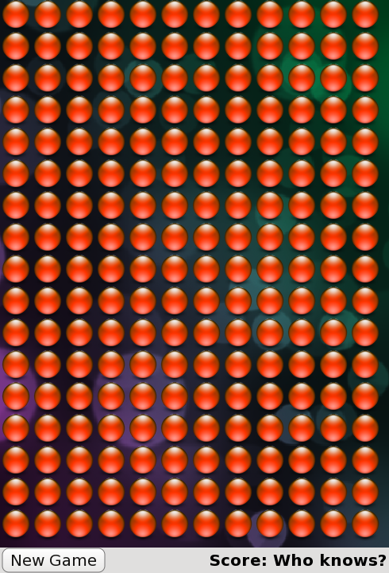

QML Advanced Tutorial 2 - Populating the Game Canvas
Generating the Blocks in JavaScript
Now that we've written some types, let's start writing the game.
The first task is to generate the game blocks. Each time the New Game button is clicked, the game canvas is populated with a new, random set of blocks. Since we need to dynamically generate new blocks for each new game, we cannot use Repeater to define the blocks. Instead, we will create the blocks in JavaScript.
Here is the JavaScript code for generating the blocks, contained in a new file, samegame.js. The code is explained below.
var blockSize = 40;
var maxColumn = 10;
var maxRow = 15;
var maxIndex = maxColumn * maxRow;
var board = new Array(maxIndex);
var component;
//Index function used instead of a 2D array
function index(column, row) {
return column + (row * maxColumn);
}
function startNewGame() {
//Delete blocks from previous game
for (var i = 0; i < maxIndex; i++) {
if (board[i] != null)
board[i].destroy();
}
//Calculate board size
maxColumn = Math.floor(background.width / blockSize);
maxRow = Math.floor(background.height / blockSize);
maxIndex = maxRow * maxColumn;
//Initialize Board
board = new Array(maxIndex);
for (var column = 0; column < maxColumn; column++) {
for (var row = 0; row < maxRow; row++) {
board[index(column, row)] = null;
createBlock(column, row);
}
}
}
function createBlock(column, row) {
if (component == null)
component = Qt.createComponent("Block.qml");
// Note that if Block.qml was not a local file, component.status would be
// Loading and we should wait for the component's statusChanged() signal to
// know when the file is downloaded and ready before calling createObject().
if (component.status == Component.Ready) {
var dynamicObject = component.createObject(background);
if (dynamicObject == null) {
console.log("error creating block");
console.log(component.errorString());
return false;
}
dynamicObject.x = column * blockSize;
dynamicObject.y = row * blockSize;
dynamicObject.width = blockSize;
dynamicObject.height = blockSize;
board[index(column, row)] = dynamicObject;
} else {
console.log("error loading block component");
console.log(component.errorString());
return false;
}
return true;
}
The startNewGame() function deletes the blocks created in the previous game and calculates the number of rows and columns of blocks required to fill the game window for the new game. Then, it creates an array to store all the game blocks, and calls createBlock() to create enough blocks to fill the game window.
The createBlock() function creates a block from the Block.qml file and moves the new block to its position on the game canvas. This involves several steps:
- Qt.createComponent() is called to generate a type from
Block.qml. If the component is ready, we can callcreateObject()to create an instance of theBlockitem. - If
createObject()returned null (i.e. if there was an error while loading the object), print the error information. - Place the block in its position on the board and set its width and height. Also, store it in the blocks array for future reference.
- Finally, print error information to the console if the component could not be loaded for some reason (for example, if the file is missing).
Connecting JavaScript Components to QML
Now we need to call the JavaScript code in samegame.js from our QML files. To do this, we add this line to samegame.qml which imports the JavaScript file as a module:
import "samegame.js" as SameGame
This allows us to refer to any functions within samegame.js using "SameGame" as a prefix: for example, SameGame.startNewGame() or SameGame.createBlock(). This means we can now connect the New Game button's onClicked handler to the startNewGame() function, like this:
Button {
anchors { left: parent.left; verticalCenter: parent.verticalCenter }
text: "New Game"
onClicked: SameGame.startNewGame()
}
So, when you click the New Game button, startNewGame() is called and generates a field of blocks, like this:

Now, we have a screen of blocks, and we can begin to add the game mechanics.